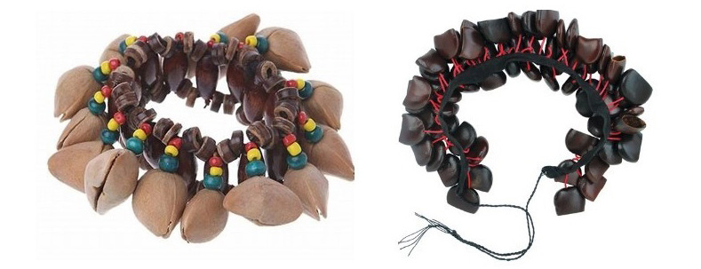
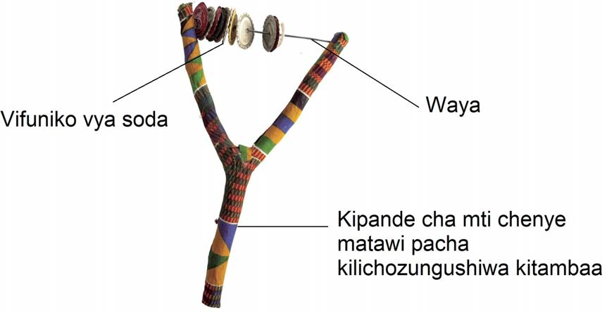

Njuga
Kielelezo namba 4: Ala za kutikisa
Baadhi ya ala za muziki za kutikisa zinaweza kutengenezwa kwa kutumia vifaa vinavyopatikana kwa urahisi kwenye mazingira yetu. Kwa mfano, unaweza kutengeneza manyanga kwa kutumia kipande cha mti chenye matawi pacha, uzi au waya na vifuniko vya soda kama inavyoonekana katika Kielelezo namba 5.

Kielelezo namba 5: Ala ya kutikisa